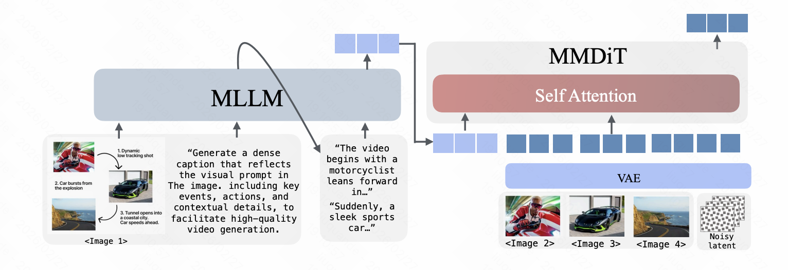
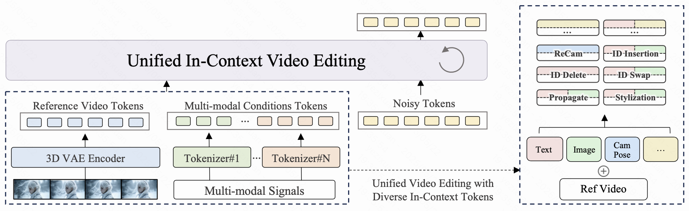
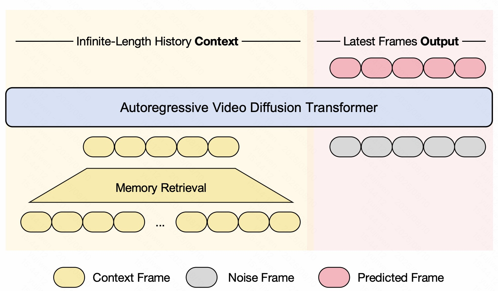
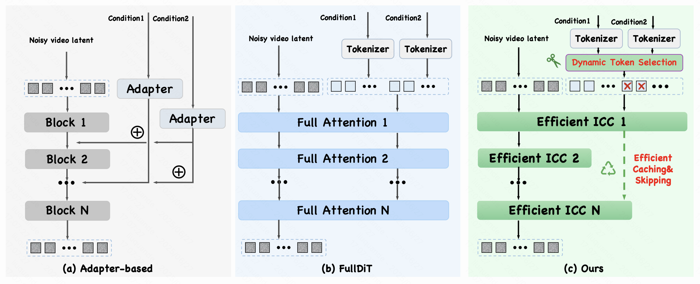
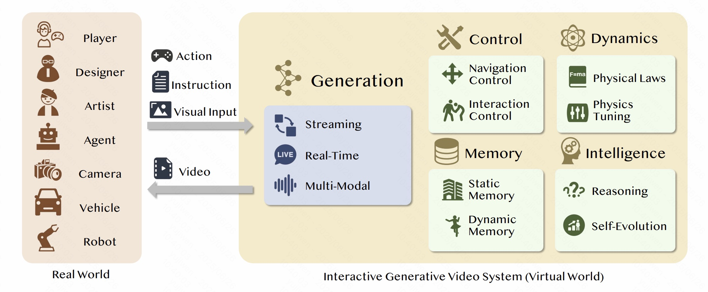
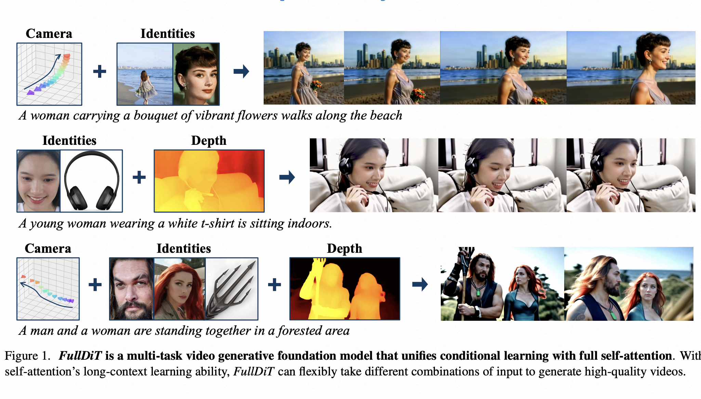
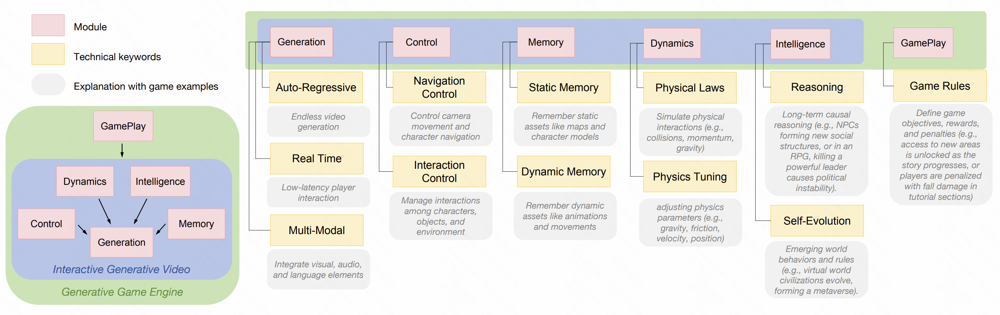

Quande Liu
Kling Team, Kuaishou Technology
Email / Google Scholar / DBLP |
 |
Biography
I am a senior researcher at Kling Team, Kuaishou Technology. We focus on multi-model visual generation and world models. Previously, I was a senior researcher at Tencent. I got my Ph.D degree from The Chinese University of Hong Kong, and B. Eng degree from Chu Kochen Honors College, Zhejiang University.
We are actively looking for interns and researchers. Feel free to reach me out if you are interested.
Recent News
- [02/2026] Two papers are accepted to CVPR 2026.
- [01/2026] Two papers of UNIC and UniVideo for unified video generation / editing and understanding are accepted to ICLR 2026.
- [12/2025] We release Kling-O1.
- [10/2025] Awarded Stanford World's Top 2% Scientists 2025.
- [08/2025] Context as Memory for generative world modeling was accepted by SIGGRAPH Asia 2025.
- [07/2025] We release FullDiT2 and UNIC for efficient multimodal video generation and editing.
- [06/2025] Our work FullDiT is accepted to ICCV 2025.
- [04/2025] We release IGV-GGE for interactive video generation.
- [01/2025] Our work GameGen-X for open-world video game generation was accepted by ICLR 2025.
- [10/2024] Awarded Stanford World's Top 2% Scientists 2024.
- [08/2023] Awarded with the CUHK Young Scholar Thesis Award.
- Recent Publications | - Full List
(* indicates equal contributions, # indicates corresponding author)

|
Kling-Omni Technical Report Kling-Team ArXiv Preprint, 2025. |
|  | UniVideo: Unified Understanding, Generation, and Editing for Videos Cong Wei, Quande Liu#, Zixuan Ye, Qiulin Wang, Xintao Wang, Pengfei Wan, Kun Gai, Wenhu Chen# ICLR 2026. |
|  | UNIC: Unified In-Context Video Editing. Zixuan Ye*, Xuanhua He*, Quande Liu#, Qiulin Wang, Xintao Wang, Pengfei Wan, Di Zhang, Kun Gai, Qifeng Chen, Wenhan Luo ICLR 2026. |
|  | Context as Memory: Scene-Consistent Interactive Long Video Generation with Memory Retrieval Jiwen Yu, Jianhong Bai, Yiran Qin, Quande Liu#, Xintao Wang, Pengfei Wan, Di Zhang, Xihui Liu# SIGGRAPH Asia 2025. |
|  | FullDiT2: Efficient In-Context Conditioning for Video Diffusion Transformers. Xuanhua He, Quande Liu#, Zixuan Ye, Wecai Ye, Qiulin Wang, Xintao Wang, Qifeng Chen, Pengfei Wan, Di Zhang, Kun Gai ArXiv Preprint, 2025. |
|  | A Survey of Interactive Generative Video. Jiwen Yu, Yiran Qin, Haoxuan Che, Quande Liu#, Xintao Wang, Pengfei Wan, Di Zhang, Kun Gai, Hao Chen, Xihui Liu ArXiv Preprint, 2025. [paper] |
|  | FullDiT: Multi-Task Video Generative Foundation Model with Full Attention. Xuan Ju, Weicai Ye, Quande Liu, Qiulin Wang, Xintao Wang, Pengfei Wan, Di Zhang, Kun Gai, Qiang Xu International Conference on Computer Vision (ICCV), 2025. |
|  | Position: Interactive Generative Video as Next-Generation Game Engine. Jiwen Yu, Yiran Qin, Haoxuan Che, Quande Liu, Xintao Wang, Pengfei Wan, Di Zhang, Xihui Liu ArXiv Preprint, 2025. [paper] |
| GameGen-X: Interactive Open-World Game Video Generation. Haoxuan Che*, Xuanhua He*, Quande Liu#, Cheng Jin, Hao Chen International Conference on Learning Representations (ICLR), 2025. [paper][code][project page] |
| Text-Animator: Controllable Visual Text Video Generation. Lin Liu, Quande Liu, Shengju Qian, Yuan Zhou, Wengang Zhou, Houqiang Li, Lingxi Xie, Qi Tian ArXiv Preprint, 2024. [paper][code][project page] |
| ID-Animator: Zero-Shot Identity-Preserving Human Video Generation. Xuanhua He, Quande Liu#, Shengju Qian, Xin Wang, Tao Hu, Ke Cao, Keyu Yan, Man Zhou, Jie Zhang†. ArXiv Preprint, 2024. [paper][code][project page] |

|
Open-world Semantic Segmentation via Contrasting and Clustering Vision-Language Embedding. Quande Liu, Youpeng Wen, Jianhua Han, Chunjing Xu, Hang Xu, Xiaodan Liang. European Conference on Computer Vision (ECCV), 2022. [paper] |

|
FedDG: Federated Domain Generalization on Image Segmentation via Episodic Learning in Continuous Frequency Space. Quande Liu, Cheng Chen, Jing Qin, Qi Dou, Pheng-Ann Heng IEEE Conference on Computer Vision and Pattern Recognition (CVPR), 2021. |
Honors & Awards
-
Ranked as Top 2% Scientists Worldwide 2025 (Single Year) by Stanford University, 2025 -
Ranked as Top 2% Scientists Worldwide 2024 (Single Year) by Stanford University, 2024 -
CUHK Young Scholar Thesis Award, 2023 -
Itarle Scholarship, 2022 -
MSRA PhD Fellowship Nomination Award, Microsoft Inc., 2020
Professional Activities
- Conference Reviewer for ICLR, ICML, NeurIPS, CVPR, ICCV, ECCV, AAAI
- Journal Reviewer for TPAMI, TIP, TNNLS